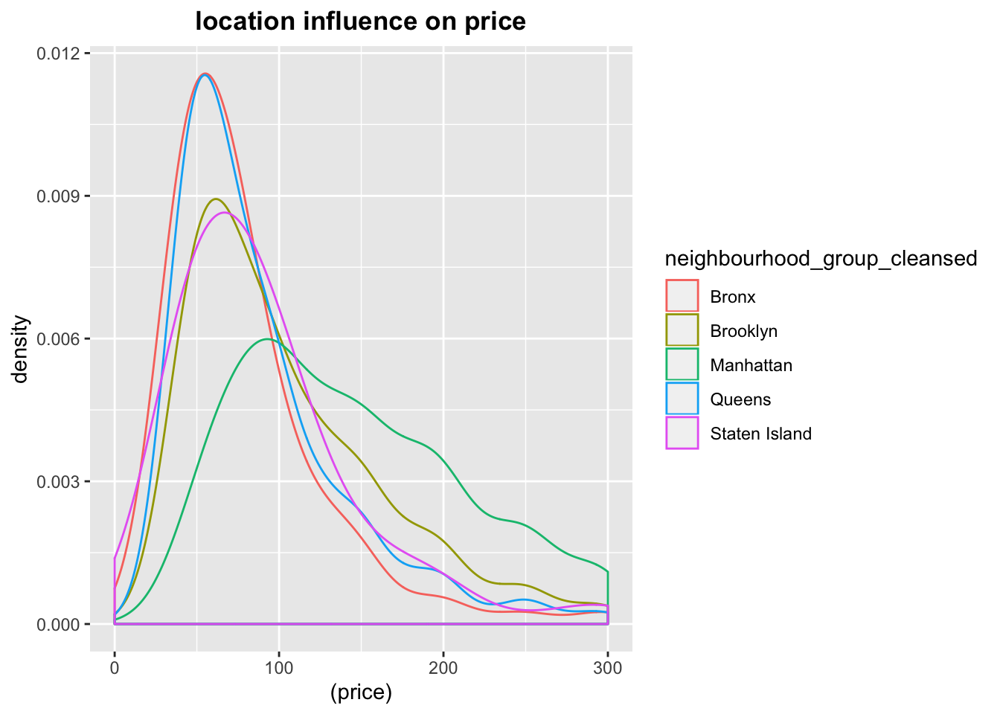
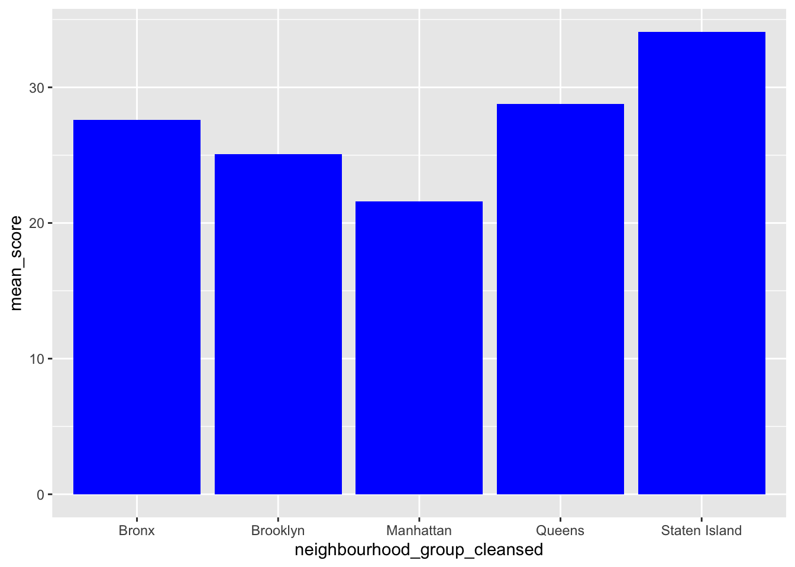
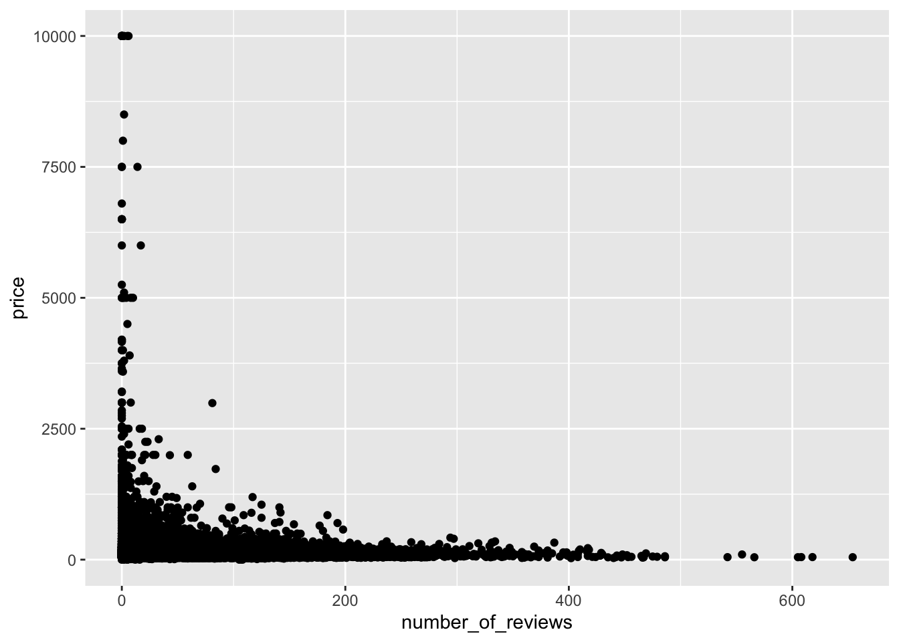
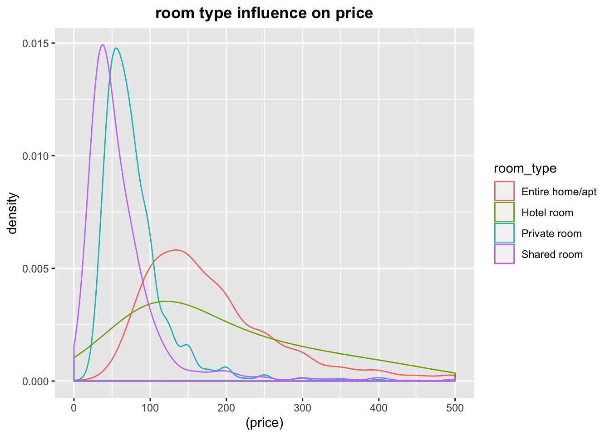
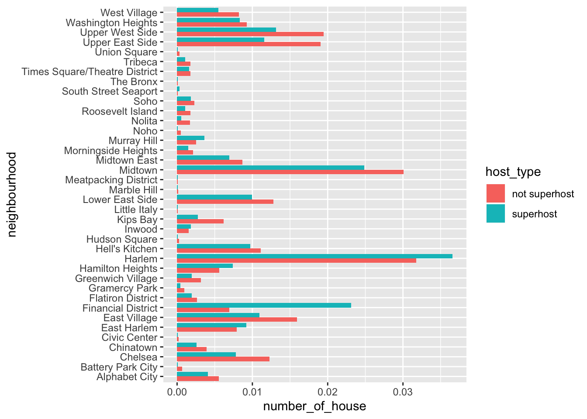
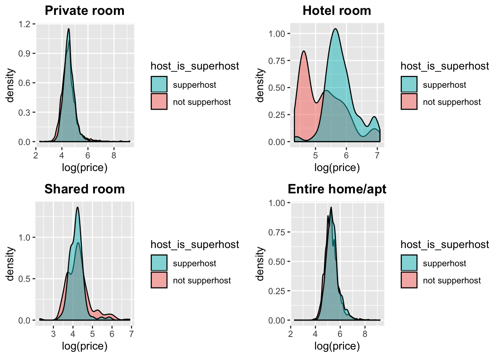
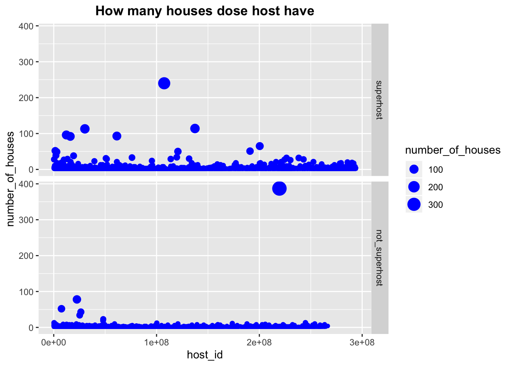
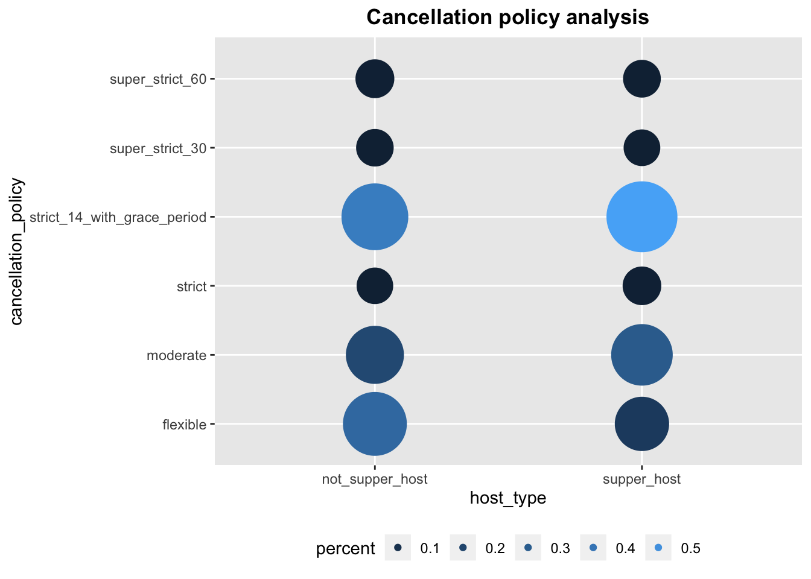
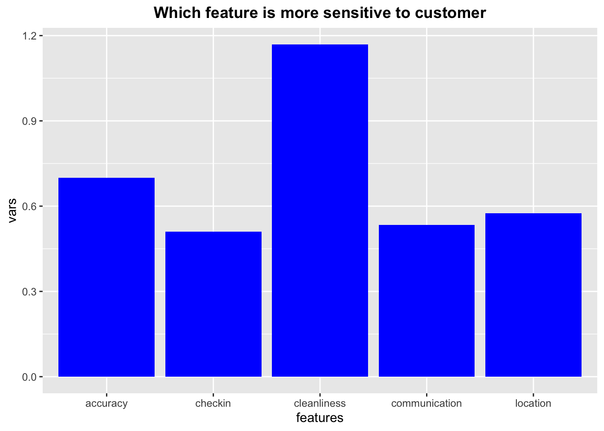
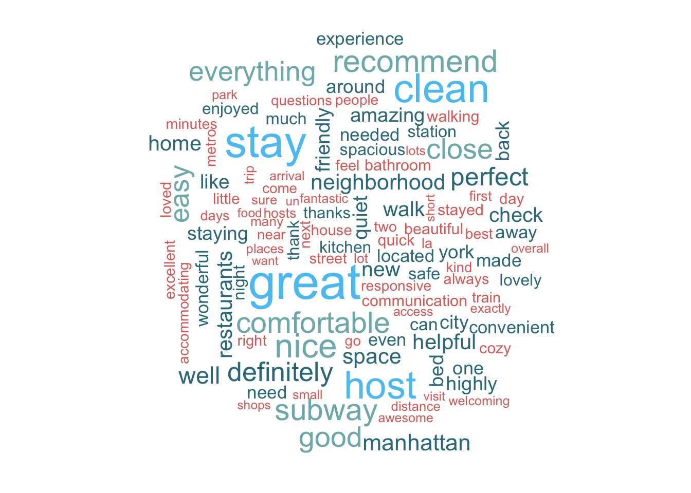

Chapter 6 sss
6.1 preliminary analysis

First we look at the price distribution over five county in New York. The distribution is quickly diminished at around 200, which means majority renting price is below 200. If we categrate houses with renting price below 100 as lower tier and above 100 as higher tier. We find that Bronx and Queens have many lower tier houses while Manhattan has houses concentrate more on higher end. This make sence, cause Manhattan is more convinient to travel in New York, and has more entertainment facilities. However, the difference between five conties is not as large as we thought. We want to analyze whether the high price in Manhattan is because of the high demand. So we want to analyze the demand by number of reviews per house.
What picks our interests is that when we calculate the average view per house in five different locations, we find that Manhattan which has the highest price recieve lowest number of reviews per house. Next we want to analyze the correlation between price and the number of reviews.

So we draw a scatter plot to view the correlation. Because there are many extreme price and reviews, therefore, it is hard to see the correlation. However, it seems that price of the houses is in inverse proportion to number of reviews, which means that the more review the house has, the less price it has, and vice versa.
6.2 Benefits of becomming a superhost:
In order to find the benefit of superhost, we need to answer two questions. First is whether super hosts set higher price than none super host, second question is whether supper host’s house recieve more reviews than none super host.
6.2.1 Whether superhost set higher price?
In order to answer the first question, we want to minimize other factors that influence price at first. According to the analysis above, location can influence price. Because we want to recommend houses for students’ parents in Columbia, so we focus the location on Manhattan. Another factor we want to take a look at that will influence price is room_type.

In the above graph, it shows that room_type indeed influnce the price. Entire home/apt has the highest price while shared room has the lowest price. This result reminds us that, we should exclude room_type features.
Then we need to know the geographical distribution of super host. We want to know whether super host is related with geographical location. If it does, we need to rule out that influence.

The graph above shows that the distribution between total_host, super_host, none_super_host. The x axis is the percentage of houses in a district. It seems that the distribution for super host and none super host between different district is approximately the same. So we don’t need to rule out location factor.
Now we can study the influence of super host on price, by focusing on Manhattan and specific room_type.

The result is that superhost can set higher price for Hotel_room type, other room_type is not different between super host and none superhost. Because For Private room, Entire home/apt and Shared room, the distribution between super host and none super host is the same. By contrast we know that for Hotel room, the influence from host_type is truely exist.
6.2.2 Whether superhost recieve more attention than none superhost
Second question we want to ask is whether super host’s house will recieve more review. We take the same steps as the first question. We first rule out other fatcors which will influence review. We do this by classify the house by location and room type, and then we see whether there is difference between superhosts and none superhosts.

The result shows that superhost will recieve more reviews for private room, entire home/apt and shared room.
6.3 How to become a supper_host
We want to give suggestions about how can host become super host, we want to analyze the question from three aspect. First is whether owning more houses will make you a super host, second is what cancellation policy does most super host have, third is what type of score should the host take more attention to than other scores.
6.3.1 Whether host should put more house on it?

This graph represents how many houses does each host has. the size of the buble represent the number of houses per host have. We facet this graph to two graph using host_type features to see the difference between super host and none super host. First conclusion we get is that the range of number of houses is large. The highest is amount to 400 plus and the lowest is just 1. However, the number of houses one post is not a determining factor, it is true that superhost tend to hold more houses, but majority of hosts only have less than ten houses. Although having less than 20 houses is not a strong indicator of being a superhost. Having 20 and more houses is a strong indicator of being a super host. We suspect that it is because more houses one have means more time the owner will spend on renting service, which means more thoughtful service.
6.3.2 What cancellation policy should host choose?

We visualize three variables in this graph. There are five kind of policies for cancellation. Before look at the data, we tend to think that superhost tend to have a more flexible cancellation policy, because it makes sense that more flexible means more satisfaction. However, the graph indicates that strict policy with 14 grace period is actually the most frequent policy super host choose. We suspect the reason be that superhost tend to focus on costumer experience, so that they are confident that it is not their fault to cause cancellation, so they make stricter cancellation policy.
6.3.3 What kind of scores should the host pay more attention?

We want to know which feature is more sensitive to customers. The measurment method is by calculating variance of the score for each features. The justification is that, the more variance one feature has, the more consideration from customer it includes. If all of the score is one hundred, it either means fake posts, or this feature is hard to tell the difference from customer. However, if the data is distributed from 0 to 100 in a bell shaped curve, it means that customer can tell the difference and it is worth more attention from the host to improve that. However, bell shape is just in theory, generally speaking, the shape can be in many forms. The result is that cleanliness has the largest variance and therefore, most sensitive to customers.

We first calculate the mean score for five features between super host and none superhost, but the mean scores are hard to tell the difference, we suspect it is because there are so many full score which interfere the analysis. So we want to analyze on the perspective of unsatisfactory rate.
We define unsatisfatory rate as the percentage of scores that are under 95% of the full score. The justification is that full score hardly reveal any information, because no such things as perfect. There always will be a way to improve. Generally speaking, there are two circumstances for full score rating, first is out of exaggeration, second is fake post. So we decide to only focus on the score which is much lower that is enough to reveal some shortages of the houses. It turns out 95% is a good cut off which will reveal us some significant findings.

The y axis represent unsatisfactory rate for superhost and none superhost. Generally speaking, superhost did better on accuracy, chekin and communication. For cleanliness and location, superhost and none superhost both have room of improvement, although superhost has less unsatisfactory customers than none superhost.